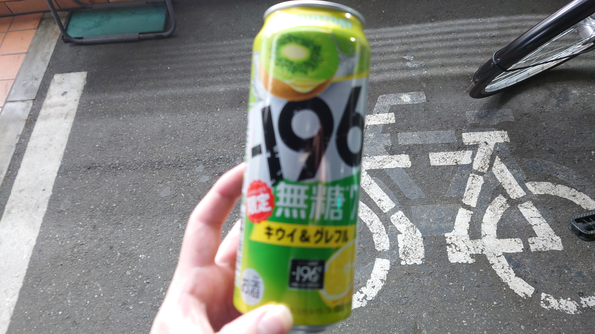
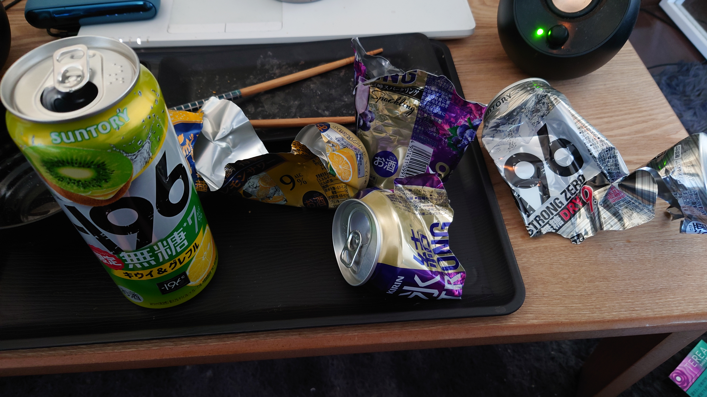

こんにちは、ザクザク食感です。
お酒を飲まなくなった。
2年くらい前まではお酒の力を借りないと思考が止まらなくて眠れなかったので、毎日ストゼロを飲んでいた。健康診断で肝臓がE判定になっても飲み続けていた。
薬を処方され始めてからはお酒を飲む頻度は減ったが、冷蔵庫にはお守りとして常にストゼロを3本ストックしていた。
最近は週末にたまに飲むくらいまで頻度が減って、お正月が明けてからはお酒を飲んでいなかった。お酒を辞めようと意識していたわけでもなく、なんとなく飲まなくなっていった。
ぐるぐる思考が止まらないことから逃げるためにお酒を飲んでいたので、その慣性がなくなってきてそのまま飲まなくなってきたのだと思う。
昨日は金曜日だったし、月末までに売り物を納品してしまう目標を達成できたので、久々にお酒を飲もうと思った。
別に何かから逃れたいわけではないのでお酒が必要ないことも分かっていたのだが、もうお酒を飲まなくてもいいことを証明してブログに書いてやろう、みたいな気持ちでお酒を買いに行った。
ストゼロは基本無糖しか飲まないのだが、期間限定の味があれば必ずそれを買うようにしている。
深夜徘徊をしていた頃、コンビニに行ってわけわかんない味のストゼロを買って飲みながら歩くのが好きだった。
メロンとか梨の作為的な味を飲んで、なんだこれ！！！ってなるのが好きだった。←カスのIMAWANOKIWA
最近は期間限定のストゼロを全然見かけないので期待していなかったが、お酒コーナーに見覚えがない色のストゼロがあって、キタ！！！と思った。

7%かよ！！！！！
最近の氷結とストゼロを融合させようとする流れを本当に許していない。
がっかりしながら帰って、お酒を飲んだ。
うますぎる！！！！！
全てがぼやけていく！！！！！
苦しさがどうとかじゃなくて、単純に酔っている状態って最高
悲しいときにばっかりお酒を飲んでいたので今回どう思うのか不安だったが、酔いの前では全てがフラットになるだけだった。
ただ、たまっていた活動ゲージみたいなものが消費されてしまった気がする。
やはり創作をするためにはフラストレーションみたいなものの内圧を高めておかないといけなくて、それが飲酒によって発散されてしまった気がする。
精神が終わっていたときに飲酒に逃げていたのは防衛として正しい気がするけど、それを創作に当てていたらどれだけ絵がかけたんだろう……
お酒を飲むまでは絵とか詩とか書く気まんまんだったのに、そういったやる気が全然なくなってしまった……
心が穏やかになったと捉えればいいことだけど、デフォルトの人生が虚無なのでやることがなくなるのは困る。
この状態と鬱が重なると、この虚無感を埋めるためにまた飲酒をするループに入ってしまっていたのかな～と気づいた。

目が覚めたらこうなっていた。こわ
酔っている状態はいいけど、やっぱり悲しいときにしか意味がない気がする。酔っていることで楽しさが増加した経験があまりないので、今度はそう思えるようになりたいですね～
それでは、さようなら。